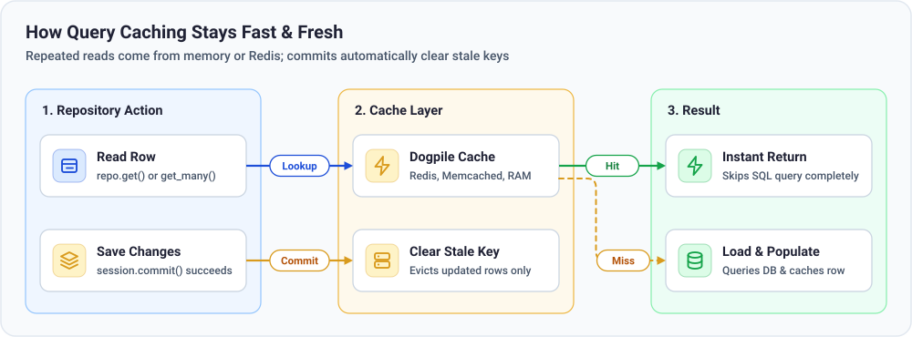
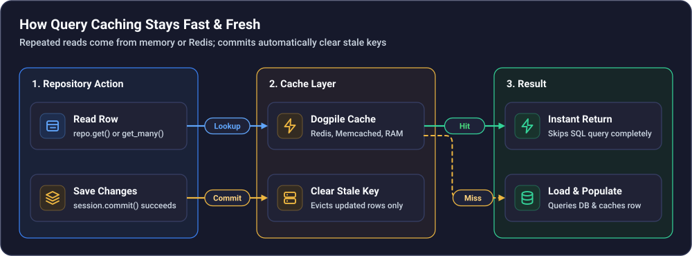

Caching#
Imagine 500 visitors opening the same popular author page at the exact same second. Without a cache, your database runs the exact same SELECT query 500 times.
Advanced Alchemy integrates with dogpile.cache so repeated lookups come straight from memory or Redis—and whenever you save changes to a row, stale cache entries are cleared automatically when the transaction commits.


Installation#
uv add "advanced-alchemy[dogpile]"
pip install "advanced-alchemy[dogpile]"
pdm add "advanced-alchemy[dogpile]"
poetry add "advanced-alchemy[dogpile]"
Quick Start#
Pass CacheConfig to your database configuration and enable auto_expunge=True on cached repositories. Every repo.get() and repo.get_many() call uses the cache automatically—or pass use_cache=False to skip the cache for a specific query:
from sqlalchemy.orm import Mapped
from advanced_alchemy.base import BigIntAuditBase
from advanced_alchemy.cache import CacheConfig
from advanced_alchemy.config import SQLAlchemySyncConfig
from advanced_alchemy.repository import SQLAlchemySyncRepository
class CachedAuthor(BigIntAuditBase):
__tablename__ = "cached_author_example"
name: Mapped[str]
class CachedAuthorRepository(SQLAlchemySyncRepository[CachedAuthor]):
model_type = CachedAuthor
db_config = SQLAlchemySyncConfig(
connection_string="sqlite:///:memory:",
create_all=True,
cache_config=CacheConfig(
backend="dogpile.cache.memory",
expiration_time=300,
key_prefix="authors:",
),
)
with db_config.get_session() as session:
repo = CachedAuthorRepository(session=session, auto_expunge=True)
created = repo.add(CachedAuthor(name="Ada Lovelace"), auto_commit=True)
cached_row = repo.get(created.id)
fresh_row = repo.get(created.id, use_cache=False)
assert cached_row.id == fresh_row.id
Choosing a Cache Backend#
from advanced_alchemy.cache import CacheConfig
redis_cache = CacheConfig(
backend="dogpile.cache.redis",
expiration_time=3600,
arguments={
"host": "localhost",
"port": 6379,
"db": 0,
"distributed_lock": True,
},
key_prefix="myapp:",
)
from advanced_alchemy.cache import CacheConfig
memory_cache = CacheConfig(
backend="dogpile.cache.memory",
expiration_time=300,
)
from advanced_alchemy.cache import CacheConfig
memcached_cache = CacheConfig(
backend="dogpile.cache.memcached",
expiration_time=3600,
arguments={"url": ["127.0.0.1:11211"]},
)
from advanced_alchemy.cache import CacheConfig
disabled_cache = CacheConfig(enabled=False)
What Happens Behind the Scenes#
Safe rollbacks: Cache entries are only cleared after
commit()succeeds. If a transaction rolls back, your cache stays untouched.No cache stampedes: If 50 requests miss the same uncached key at once, one query runs and shares the result with the waiting requests.
Columns only: Cached rows store column values, not related tables. Call
session.merge(row)first if you need to lazy-load relationships later.
Custom JSON Serializer & Standalone Setup
from typing import Any
from sqlalchemy import inspect
from advanced_alchemy.cache import CacheConfig, CacheManager, setup_cache_listeners
from advanced_alchemy.utils.serialization import decode_json, encode_json
def custom_serializer(model: Any) -> bytes:
mapper = inspect(model.__class__)
payload = {col.key: getattr(model, col.key) for col in mapper.columns}
return encode_json(payload).encode("utf-8")
def custom_deserializer(raw: bytes, model_class: type[Any]) -> Any:
return model_class(**decode_json(raw.decode("utf-8")))
cache_manager = CacheManager(
CacheConfig(
backend="dogpile.cache.memory",
serializer=custom_serializer,
deserializer=custom_deserializer,
),
)
setup_cache_listeners()
See Caching for the full caching API reference.